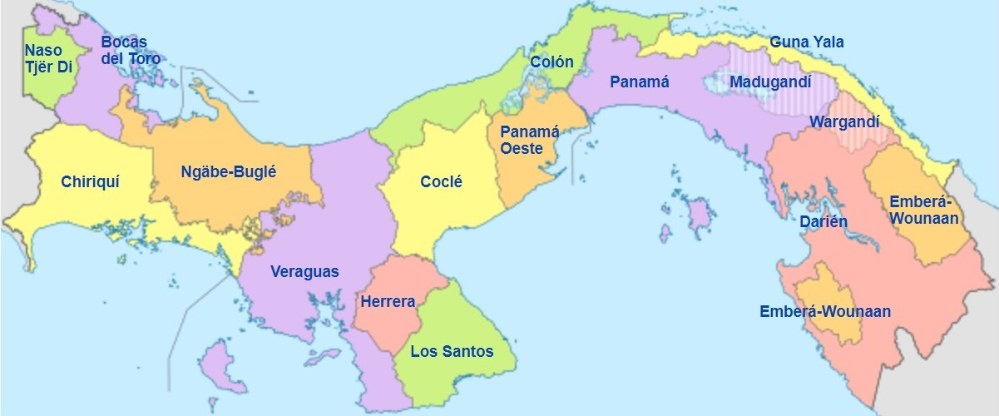
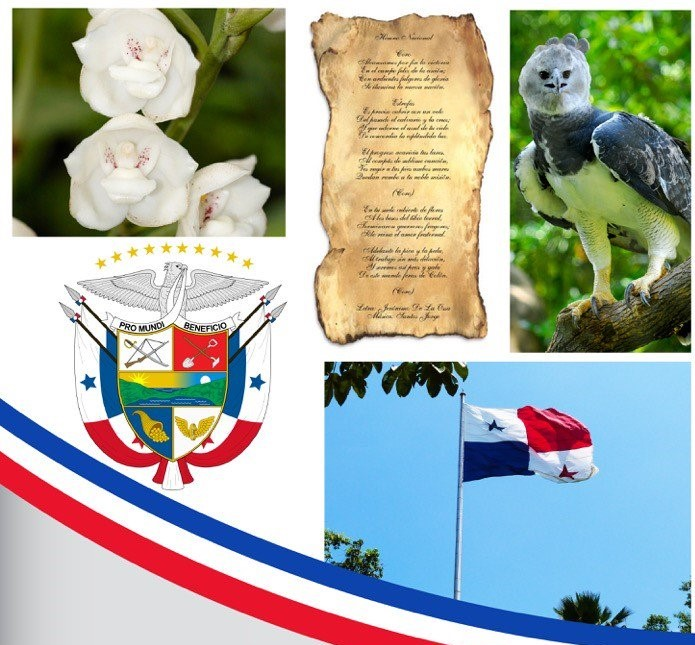
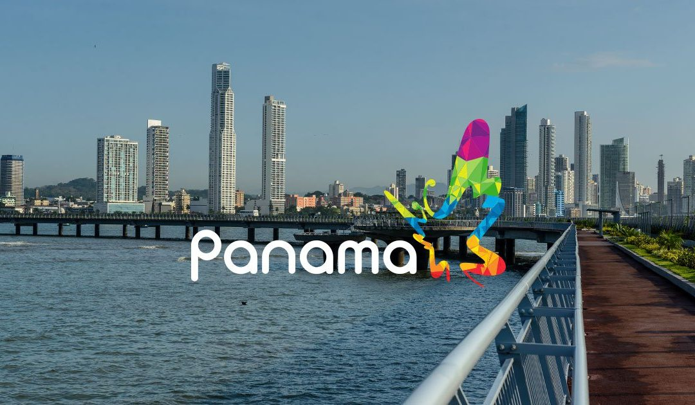

-

Provincias y comarcas de Panamá
Hasta el 31 de diciembre de 2013 la división política de la República de Panamá comprendía 10 provincias, 81 distritos o municipios, 6 comarcas indígenas de nivel provincial y 695 corregimientos de los cuales dos son comarcales. El 1 de enero de 2014 se creó la provincia de Panamá Oeste que se segregó de la provincia de Panamá y se compone de los distritos que se ubican al oeste del canal de Panamá
Provincias:
1. Bocas del Toro
2. Coclé
3. Colón
4. Chiriquí
5. Darién
6. Herrera
7. Los Santos
8. Panamá
9. Veraguas
10. Panamá Oeste
Comarcas:
1. Emberá-Wounaan
2. Guna Yala
3. Naso Tjër Di
4. Ngäbe-Buglé
5. Guna de Madugandí
6. Guna de Wargandí
Historia de Panamá
La historia de Panamá ha sido ampliamente influenciada por la posición estratégica de este istmo estrecho que une América del Norte con América del Sur y que separa el océano Pacífico del océano Atlántico. Los Cunas, los Chocos y los Guaymis fueron algunas de las tribus indígenas que han ocupado la región. Aún cuando estas civilizaciones no fueron tan avanzadas como la de los Mayas o los Incas, puede que hayan sufrido la influencia de ellas. El explorador Rodrigo de Bastidas desembarcó sobre el territorio en 1501 y, al año siguiente, Cristóbal Colón reivindicó Panamá en nombre de España.
Panamá sirvió de base para el transporte marítimo de los minerales, metales preciosos y tesoros provenientes del Perú y encaminados hacia España por un eje que atravezaba el país de un océano al otro, de Panamá al puerto de Nombre de Dios, sobre el Atlántico. Dependiente del virreinato del Perú, Panamá fue integrada a la Nueva Granada a comienzos del siglo XVII y permaneció bajo dominación española hasta 1821. La Nueva Granada fue entonces unida a la República de la Gran Colombia, creada bajo el arbitrio de Simón Bolívar. En 1826, Bolívar reunió a los gobernantes de cinco estados de la Gran Colombia, en Panamá, durante el congreso panamericano, a fin de construir con ellos la unidad del continente sudamericano. Murió, sin embargo, en 1830, antes de haber consolidado esta unificación.
Ya en 1855, los norteamericanos habían acabado la construcción de una vía férrea que atravezaba Panamá de un océano al otro. Los españoles habían tenido la idea de construir un canal para unir los dos océanos, pero fue un francés, Ferdinand de Lesseps, quien, en 1880, realizó finalmente el primer intento con la Compañía Universal del Canal Interoceánico. Sin embargo, los trabajos fueron interrumpidos nueve años más tarde, en razón de un grave escándalo político-financiero que sacudió a la III República Francesa.
En 1903, Colombia rehusó a los Estados Unidos el derecho de acabar el canal. En reacción, los Estados Unidos incitaron a Panamá a sublevarse. El 3 de noviembre de ese mismo año, Colombia debió entonces consentir la creación de la República de Panamá. Tropas norteamericanas fueron enviadas para sostener al nuevo gobierno panameño y, desde el 18 de noviembre, los derechos del canal fueron vendidos a los Estados Unidos.
El canal fue acabado en 1914, y devino un pasaje obligado para los buques que navegaban entre los océanos Atlántico y Pacífico, evitándoles el largo, y a menudo peligroso, viaje alrededor del Cabo de Hornos, en el extremo de América del Sur. Los Estados Unidos controlaban el canal, y la mayoría de los puestos de dirección fueron confiados a ciudadanos norteamericanos.
Desde la independencia, adquirida en 1903, la vida política de Panamá ha tenido sobresaltos, habiendo mucho en juego en las relaciones a menudo tensas con el vecino norteamericano.
En 1968, a continuación de una serie de discutidas elecciones y de crisis constitucionales, el general Omar Torrijos, comandante de la guardia nacional, tomó el poder.
A la muerte de Torrijos, en 1981, su ministro de Defensa, el general Manuel Antonio Noriega devino cada vez más influyente. En 1988, Eric Arturo Delvalle, vuelto presidente en 1985, intentó expulsar a Noriega, quien, luego, destituyó a Delvalle. Noriega gobernó como jefe de la Asamblea Nacional y decretó el estado de sitio.
El régimen de Noriega se volvió cada vez más represivo y corrupto. Las relaciones con los Estados Unidos se deterioraron, el presidente norteamericano, George Bush, llamó en mayo de 1989 al ejército y al pueblo panameño a derrocar a Noriega. En octubre de 1989, una tentativa de golpe de Estado contra Noriega fracasó, y el 20 de diciembre del mismo año los Estados Unidos enviaron tropas a Panamá (operación "Justa Causa"). Noriega se refugió en la nunciatura del Vaticano, pero fue extraditado a los Estados Unidos; en 1990, los norteamericanos instalaron en el poder a Guillermo Endara. Reconocido culpable de tráfico de drogas, Noriega fue condenado, en 1992, a purgar una pena de prisión de 40 años en los Estados Unidos.
Símbolos Patrios
-

Bandera
La bandera panameña se compone de un rectángulo dividido en cuatro cuarteles: el cuartel superior junto al asta, es blanco con una estrella azul de cinco puntas en el centro; el inferior, también junto al asta, es azul; el cuartel superior derecho es rojo y el inferior es blanco con una estrella roja.
Los colores rojo y azul representan los partidos liberal y el conservador, respectivamente. Finalmente, las estrellas simbolizan la confraternidad, unidad, paz y concordia.
Escudo
El escudo panameño consiste de dos cuarteles superiores iguales; el de la izquierda, en campo plateado, presenta un sable y un fusil para simbolizar el estado de alerta del pueblo panameño en defensa de sus derechos y soberanía; el cuartel derecho presenta una pala y un azadón que son los símbolos del trabajo.
En el rectángulo central a todo lo ancho del escudo esta el Istmo con los dos océanos y en el cielo un sol que se oculta y una luna que sale; la hora crepuscular que marca el instante de la independencia.
En el cuartel inferior izquierdo una cornucopia de monedas sobre en un campo azul simboliza la abundancia, y a la derecha, una rueda alada sobre campo blanco que representa el progreso. Sobre el escudo hay un Águila que simboliza la soberanía y que sujeta en el pico una cinta de plata que lleva el lema PRO MUNDI BENEFICIO -Para Beneficio del Mundo. Las nueve estrellas sobre el águila representan las nueve provincias de la República.
Flor Nacional (Espiritu Santo)
La Flor del Espíritu Santo, se caracteriza por tener pétalos de un color marfil intenso, adornados en el centro con una cubierta floral bien definida y delicada paloma, causando gran admiración a todo el que tiene la oportunidad de conocerla.
Ave Nacional (Águila Harpía)
El Águila Harpía es el ave nacional de Panamá, su hábitat se extiende desde Centroamérica hasta Brasil. Es un depredador que ama el bocado que habita en los árboles. Ella representa el símbolo de la diversidad biológica.
Himno Nacional de Panamá
LETRA
CORO
Alcanzamos por fin la victoria
En el campo feliz de la unión;
Con ardientes fulgores de gloria
Se ilumina la nueva nación.
Es preciso cubrir con un velo
Del pasado el calvario y la cruz;
Y que adorne el azul de tu cielo
De concordia la espléndida luz.
El progreso acaricia tus lares.
Al compás de sublime canción,
Ves rugir a tus pies ambos mares
Que dan rumbo a tu noble misión.
(Coro)
En tu suelo cubierto de flores
A los besos del tibio terral,
>
Terminaron guerreros fragores;
Sólo reina el amor fraternal.
Adelante la pica y la pala,
Al trabajo sin más dilación,
Y seremos así prez y gala
De este mundo feraz de Colón.
(Coro)
¿Quieres visitar Panamá? Te dejamos una guía de turismo en la que puedes consultar la amplia gama de lugares que puedes conocer.
Has clic aquí.
-
